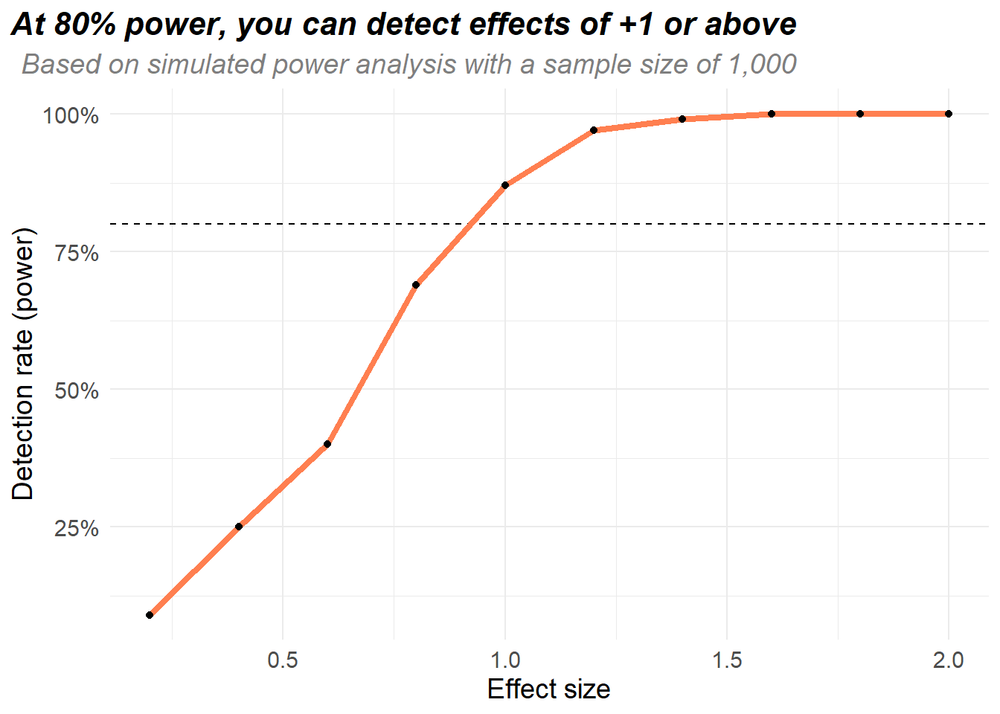
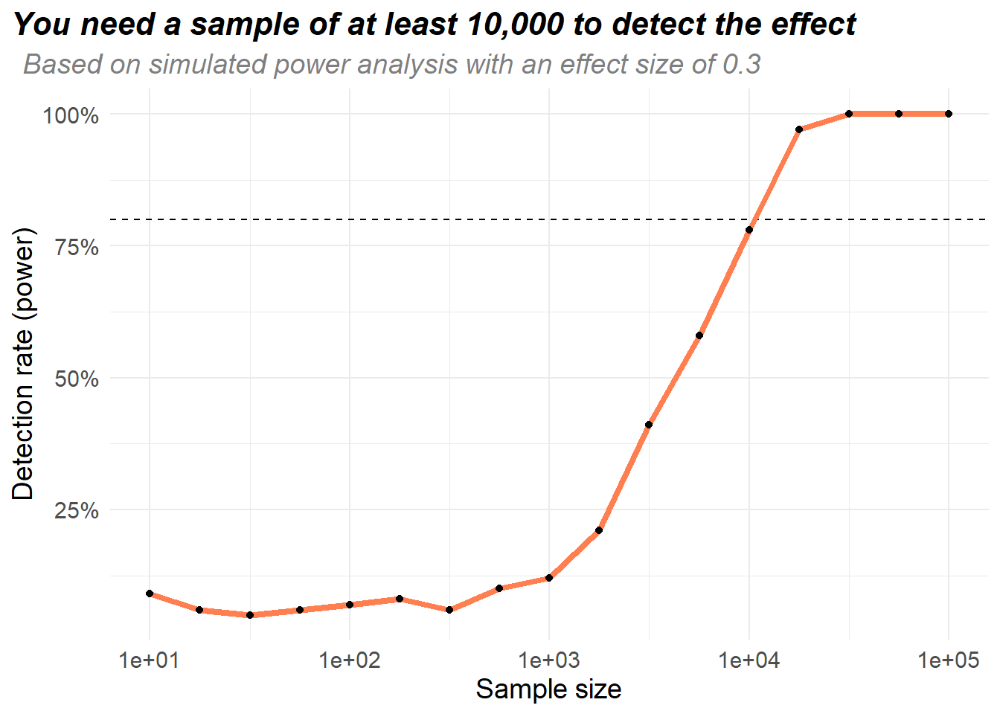
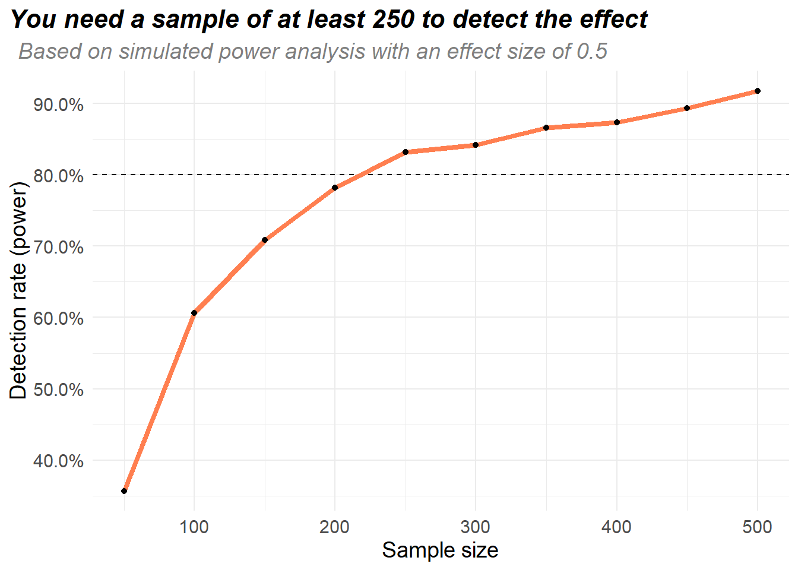

I’ve been trying to get my head around power analysis recently. I have some very hazy memories of trying to do power analysis back in uni, where it was treated as some weird step you need to do before any lab work. I remember a bunch of weird formulas & feeling very confused the whole time, and I’ve more or less avoided it ever since.
There’s a bunch of papers recently out which show how to use simulations for power analysis. I’ve skimmed over a few of them (and I don’t claim to be an expert!), but they make sense! Why isn’t power analysis usually taught this way?
Power analysis is part of experimental design - the stuff you do before running an experiment. Very broadly, there’s a bunch of things you might be interested in when you do an experiment:
If you fix 4 of these 5 things, power analysis will tell you about the fifth thing. For example if you are doing an experiment on 100 people, you already know the variation in X & Y, and you want at least a 80% chance of detecting an effect, power analysis will tell you the minimum detectable effect - the smallest effect size you’ll be able to measure with the experiment.
Or imagine if you have a rough idea of the effect size (for example from past experience or lit reviews), you know the variation in X & Y, and you want an 80% chance of detecting an effect, then power analysis will tell you the smallest sample size required.
This is why power analysis is such an important part of the design - if the analysis says you need at least a sample of 1,000 people but you only have 100, there’s not much point in doing the experiment!
The idea behind simulating is quite straightforward - you just simulate the experiment over & over, and see how many times you’re able to detect an effect. Here’s an example:
I think \(Y\) is related to \(X\), but I don’t know how large the effect is. \(X\) is uniformly distributed between 0 & 1 in the population.
I’ve got a sample of 1,000 people and - if an effect exists - I want to correctly detect it at least 80% of the time. How large does the effect size need to be?
All we’re going to do is simulate the data over and over, fit a linear model & see if the \(X\) coefficient is significant. First of all lets make a function to simulate the experiment:
experiment_sim = function(effect, sample_size){
# Simulate experimental data
X = runif(sample_size, 0, 1) # X is uniformly distributed between 0 & 1
Y = effect * X + rnorm(sample_size, mean = 0, sd = 3) # Y is related to X
# Run the analysis & get it into a tidy format
mod = lm(Y ~ X)
mod = broom::tidy(mod)
# Check if the X term is significant
sig = mod$p.value[[2]] < 0.05
return(sig)
}For any given effect size, we can use this function to figure out how many times the experiment would detect the effect. For example, if the effect size was 0.2, then the experiment would detect the result about 12.6% of the time:
# Run the experiment 500 times with an effect size of 0.2
set.seed(19532)
n_experiment = 500
sig = vector('logical', n_experiment)
for (i in 1:n_experiment){
sig[[i]] = experiment_sim(0.2, 1000)
}
mean(sig)So to figure out how large the effect size needs to be in order for the experiment to detect it 80% of the time, we just have to try a bunch of different effect sizes (I’ve reduced the number of experiments from 500 to 100 to speed things up):
set.seed(65439)
effect_sizes = seq(0.2, 2, by = 0.2)
pct_detect = vector('double', length(effect_sizes))
n_experiment = 100
for (j in seq_along(effect_sizes)){
# Repeatedly run the experiment with the effect size & count the number of times
# the experiment would detect the effect
sig = vector('logical', n_experiment)
for (i in 1:n_experiment){
sig[[i]] = experiment_sim(effect_sizes[[j]], 1000)
}
pct_detect[[j]] = mean(sig)
}
This experiment would be able to consistently detect effect sizes around 1 or larger. If you don’t think the effect is going to be that large, don’t do the experiment! You’ll need to improve the design somehow - increase the sample size, reduce variation in X or Y, use more accurate analysis steps, …
If someone asks a different question, it’s very easy to flip the code around to answer it. For example imagine if someone asks you about sample sizes:
I think \(Y\) is related to \(X\), I’ve read loads of papers and I think the effect size is probably 0.3ish. \(X\) is uniformly distributed between 0 & 1 in the population.
I want to do an experiment to figure out the effect size, how many people do I need to include in my experiment?
Here’s the code to answer the question - look how similar it is! In the last bit of code we fixed the sample size & varied the effect sizes, now we fix the effect size & vary the sample sizes:
set.seed(65439)
sample_sizes = 10^seq(1, 5, by = 0.25)
pct_detect = vector('double', length(sample_sizes))
n_experiment = 100
for (j in seq_along(sample_sizes)){
# Repeatedly run the experiment with the effect size & count the number of times
# the experiment would detect the effect
sig = vector('logical', n_experiment)
for (i in 1:n_experiment){
sig[[i]] = experiment_sim(0.3, sample_sizes[[j]])
}
pct_detect[[j]] = mean(sig)
}
The examples so far haven’t been massively difficult, they’re the sort of problems you can use calculators like G*Power on. The cool thing about simulations is you can use them to analyse any sort of experimental setup, no matter how weird looking it is.
Here’s a bit of a tricky example:
You’ve got 1,000 people who are split into 10 equally sized groups. Treatment is assigned at the group level (so either everyone in a group gets the treatment, or no one in the group gets the treatment). Each person has a \(W \sim \text{Unif}(0, 1)\), and treatment is given based on the average \(W\) within the group.
You think the true effect is somewhere around 0.5, how big of a sample do you need to be able to detect the effect 80% of the time?
There’s 2 weird things going on here - most tools for power analysis assume treatment is done at the person level, but here the treatment is assigned at group level. Also there’s a confounder \(W\) we need to control for in our analysis, we can’t just do a simple regression of \(Y \sim X\). Fortunately none of this matters for simulation! We just follow the same process as before: Simulate the experiment a bunch of times with a bunch of different sample sizes and see how often the effect is detected:
experiment_sim = function(effect, sample_size){
### Generate the data - need to be careful with the group treatment
df = data.frame(W = runif(sample_size),
group = sample(1:10, sample_size, replace = T))
# Figure out which groups get treated. Say each group gets treated
# with probability 0.5 + mean(W) / 10. We can check this using
# the fact that X > runif() occurs with probability X, for X between 0 & 1
df_treat = df %>%
group_by(group) %>%
summarise(mean_w = mean(W)) %>%
mutate(treated = 0.5 + mean_w / 10 > runif(nrow(.)))
# Treatment depends on the group you're in, and your value of W
df = df %>%
left_join(df_treat, by = 'group') %>%
mutate(Y = effect * treated + W + group/10 + rnorm(sample_size))
### Do the analysis
mod = lm(Y ~ treated + W, data = df)
mod = broom::tidy(mod)
sig = mod$p.value[[2]] < 0.05
return(sig)
}
# Run the experiment a bunch of times, varying the sample size
# Exactly the same code as above
set.seed(592)
n_experiment = 500
sample_sizes = seq(50, 500, by = 50)
pct_detect = vector('double', length(sample_sizes))
for (j in seq_along(sample_sizes)){
sig = vector('logical', n_experiment)
for (i in 1:n_experiment){
sig[[i]] = experiment_sim(0.5, sample_sizes[[j]])
}
pct_detect[[j]] = mean(sig, na.rm = T)
}
Turns out that an effect size of 1 in this setup is very large, so we don’t need a lot of data to be able to detect the effect.
So that’s it! Using simulation, there’s only 2 steps to any power analysis:
Way easier than memorising all them formulas from your old stats classes!